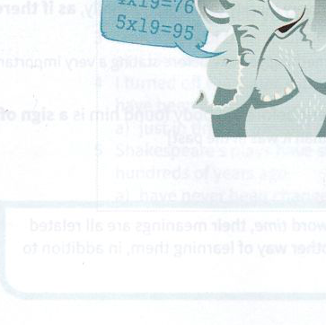

Exercises
30.1 Complete each of these idioms with memory or mind.
- Out of sight, out of ...................................................... .
- The class reunion gave us a great opportunity for a trip down ...................................................... lane.
- I'm sorry I forgot to post your letters. It just slipped my ...................................................... .
- You can't remember what you did last night? Let me jog your ...................................................... .
- Please bear me in ...................................................... if you need someone to work on this project.
- I was so embarrassed that my ...................................................... just went blank.
- It never crossed my ...................................................... to tell Nigel about our meeting.
- Streets full of horse-drawn carriages are still within living ...................................................... – just!
- I wanted to give her a surprise, but nothing suitable came to ...................................................... .
- Try to commit your mobile phone number to ...................................................... .
30.2 Complete each of these idioms.
- I don't think I know him, but his name rings ........................................................................................................ .
- What is the word for it? I can't remember it. Oh dear, it's on ........................................................................................................ .
- If I try, I should be able to remember the recipe for you. Let me rack ........................................................................................................ .
- Try not to interrupt his train ........................................................................................................ .
- My son is much more adventurous than I was. At his age the thought of travelling abroad alone would never ........................................................................................................ .
30.3 Answer these questions.
- Which idiom could also be included in the Proverbs unit (Unit 29) of this book?
- Find two idioms that mention parts of the body other than mind or memory.
- What is the literal meaning of jog in the idiom jog someone's memory?
- Rack is the name of a medieval instrument of torture on which people lay and were stretched. How does it fit the idiom rack your brains?
- What is the literal meaning of stroll in the idiom take a stroll down memory lane?
- What is the literal meaning of spring in the idiom spring to mind?
- What is the literal meaning of the word bear in the idiom bear in mind?
- Which of the idioms is based on a metaphor of hearing something?
30.4 Complete each of these idioms with the correct form of a verb.

I was told to speak for five minutes on the subject of elephants. A few ideas ...................................................... (1) to mind and I reminded people how it is a well-known fact that elephants have a very good memory. Then, after a minute or so, my mind ...................................................... (2) blank. I knew I'd read an article about elephants recently, but everything I'd read had ...................................................... (3) my mind. I ...................................................... (4) my brains, but nothing ...................................................... (5) to mind. A friend ...................................................... (6) my memory by calling out 'ears' from the back of the room, but soon I had completely dried up. If only my memory were as good as an elephant's!